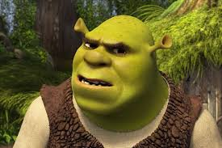

Shrek" es una película de animación lanzada por DreamWorks en 2001, dirigida por Andrew Adamson y Vicky Jenson. Es una comedia animada que subvierte los típicos cuentos de hadas al ofrecer una versión más irreverente y humorística de los personajes clásicos de los cuentos de hadas.
La trama gira en torno a Shrek, un ogro solitario que vive en un pantano y disfruta de su vida tranquila hasta que su hogar es invadido por una gran cantidad de personajes de cuentos de hadas, expulsados de sus hogares por Lord Farquaad, el gobernante de Duloc. Shrek, en busca de tranquilidad, busca a Lord Farquaad para resolver el problema, y este último le asigna la tarea de rescatar a la princesa Fiona, quien está encerrada en una torre y es la clave para que Lord Farquaad pueda convertirse en rey. Shrek acepta la tarea y emprende un viaje junto a un burro parlante llamado Asno, quien se convierte en su compañero de aventuras. A lo largo del viaje, Shrek y Asno enfrentan diversos desafíos y encuentran personajes peculiares como el Gato con Botas. Finalmente, Shrek rescata a Fiona, pero a medida que pasan tiempo juntos, desarrollan una conexión emocional. Humor  La película combina humor inteligente con una narrativa que desafía los estereotipos de los cuentos de hadas tradicionales. Además, cuenta con una animación impresionante para su época y una banda sonora memorable que incluye canciones populares. "Shrek" fue un gran éxito tanto en taquilla como entre la crítica, ganando el premio Oscar a la Mejor Película de Animación en 2002 y convirtiéndose en una de las películas más queridas de DreamWorks Animation. Su éxito llevó a la creación de varias secuelas y spin-offs.